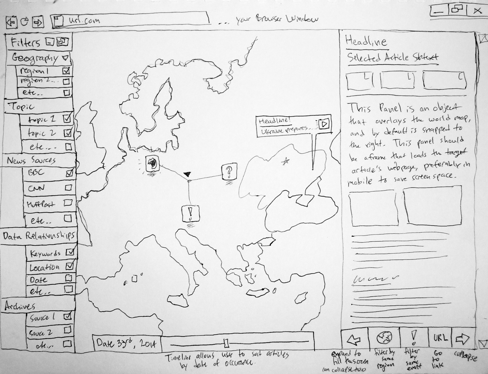

Problem:
Users need a way to browse the internet and see news sources displayed from various sources, and visualized on a map.
Typically, users will need to go to numerous websites to get information on world events, and even then,
users will not know the reliability of the information and need a way to cross reference it. Also,
there is no way to quickly see a collection of world events, on a day-by-day basis, visualized on a map, geographically.
Target Users:
The target user of this application is anyone who wishes to read global news, anyone who wishes to see these events visualized on a map,
with relationships based on various options as well as a way to filter the news articles. Mainly this is for users
who need a way to see the same news article from multiple sources, and to be able to quickly read and compare these articles
to verify the validity of the statement being made.
Solution:
The solution is a web application developed in Javascript, CSS/SASS/SCSS, and HTML/Handlebars. The solution will be based
on the Yeoman Web App generator, and make use of node package manager to employ SASS (syntactically awesome style sheets)
and Handlebars (an html static site web templating language). These components, along with JQuery standard GUI tools,
will allow us to create a webapp that is useable on any device, and has a responsive GUI that adapts to different screen sizes.
This icon below opens up an image that describes the concept art:

In this image you can observe the following basic GUI components:
-The Filters Panel
--This panel will display all of the ways the user can sort the articles. Geography, Topic and News sources
--will poll data from news source API's (if time permits us to build a backend)
--Data relationships will allow the user to make inferences between articles using keywords and data.
-The Article Panel
--This Panel will display the currently selected article in a mobile version state, to conserve screen space.
--This sections also contains several buttons to give the user more options with the article viewing
-The Map
--This will take up the most screen space, and display news articles by date (can be changed using the timeline)
--clicking on an article on the map loads it in the right-side panel, using the mobile version
{kind=link}